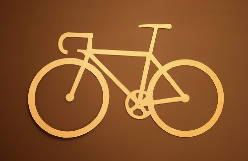
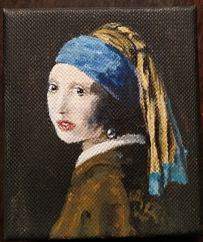
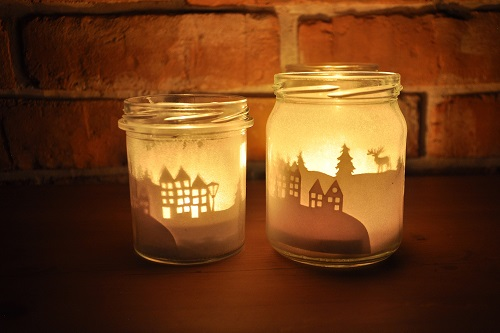

Sport
Ich treibe viele Sportarten aber am liebsten mag ich Snowboard.
Es gibt auch ein paar Snowboardarten: Slalom, Snowboardcross, Freestyle, Freeride. Meine größte Leidenschaft ist Off-Road Fahren also Freeride.
Während des Studiums war ich in einem Snowboard Team und ich habe meine Universität in polnischen Studentenmeisterschaften im Giant Slalom vertreten. Insgesammt verbringe ich viel Freizeit im Helm.


Hand Made
Ich habe keine eigene Technik. Manchmal male ich kleinformatige Bilder mit Acrylfarben, manchmal nähe ich Kleidungen.
Letztens habe ich ein Fahrrad mit einer Erbauer Stichsäge gemacht.



Reisen
Ich verbinde Reisen mit Sport. Ich verbringe viel Zeit in Bergen vor allem im Winter.


Essen
Kochen kann ich leider nicht so gut aber ich liebe essen.
Besonders östliche Küche.